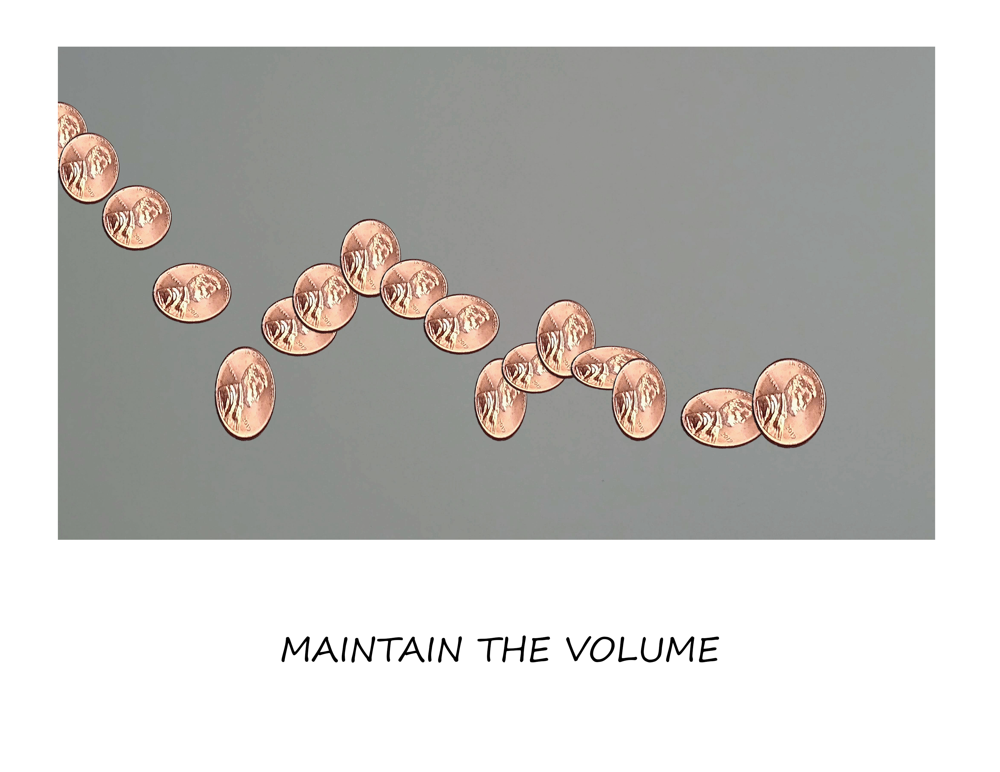

Baldessari inspired work
This work is based on Baldessari's combination of text and images-both wrong and Goya series.
As Baldessai was deconstructing photographic techniques, I decided to try the same for one of the basic principle of animation- Stretch and Squash. Using the bouncing ball exercise with a coin, I stretched and squashed it in the opposite places to where thy should be.
